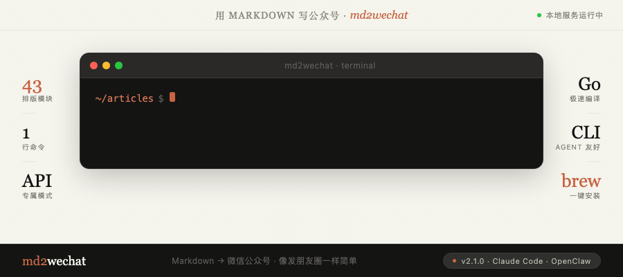

写 Markdown，生成公众号排版，制作封面和文章配图，预览校验后推送草稿箱。
md2wechat 把公众号发布流程拆成一组可验证的 CLI 命令。支持 Claude Code、Codex、WorkBuddy、Kimi Work、Hermes Agent、OpenClaw 等 Agent 通过 JSON discovery 稳定调用。

3,198GitHub Stars
48专业主题
43排版模块
6+Agent 支持
01
核心功能
Markdown → 公众号
convert 命令
Markdown 转微信公众号兼容 HTML，支持预览、上传图片、创建草稿
40+ 样式
专业主题系统
免费模式 3 个基础主题，专业 API 模式 48 个精调主题 + 43 个高级排版模块
AI 配图
封面图 / 信息图生成
支持 Volcengine、ModelScope、OpenRouter、OpenAI、Gemini 等 provider
批量发布
多账号管理
命名公众号账号，本地只读发现，不输出 Secret，支持矩阵号运营
02
专业 API
| 能力 | 免费 AI 模式 | 专业 API 模式 |
|---|---|---|
| 输出方式 | 生成 prompt，外部 LLM 处理 | 直接返回微信 HTML |
| 主题数 | 3 个基础主题 | 48 个专业主题 |
| 排版模块 | 不支持 | 43 个 :::module 模块 |
| 输出一致性 | 取决于外部 LLM | 确定性输出 |
| 响应速度 | 取决于外部 LLM | 秒级 |
| 适用场景 | 实验 | 团队、客户号、矩阵号 |
48 精调主题
43 排版模块
确定性 HTML
微信接口固定出口
03
Agent 工作流
支持 Claude Code、Codex、WorkBuddy、Kimi Work、Hermes Agent、OpenClaw 通过 JSON discovery 稳定调用。
Capabilities
→
Doctor
→
Inspect
→
Convert
capabilities --json
列出 CLI 支持的所有命令
doctor --json
检查 API/草稿/上传就绪
inspect --json
文章元数据和发布就绪性
themes list --json
可用主题列表
layout list --json
可用排版模块列表
title suggest --json
生成标题建议
skills list --json
内置 Agent SOP 列表
skills read md2wechat
读取特定 SOP
Claude Code
Hermes Agent
OpenClaw
Codex
WorkBuddy
Kimi Work
04
常用命令
| 命令 | 用途 |
|---|---|
inspect |
检查文章元数据和发布 readiness |
advise |
为已有文章推荐可选的最小增强动作 |
preview |
本地预览，不上传、不创建草稿 |
convert |
Markdown 转微信 HTML，可选创建草稿 |
write |
从想法生成文章 |
humanize |
重写 AI 文章，支持 authentic 强度 |
generate_cover |
生成封面图或图片计划 |
generate_infographic |
生成信息图或图片计划 |
upload_image |
上传图片到微信素材库 |
doctor |
本地配置体检 |
→
快速开始
md2wechat-skill · 面向 AI Agent 的微信公众号创作与发布 CLI · Source Available License